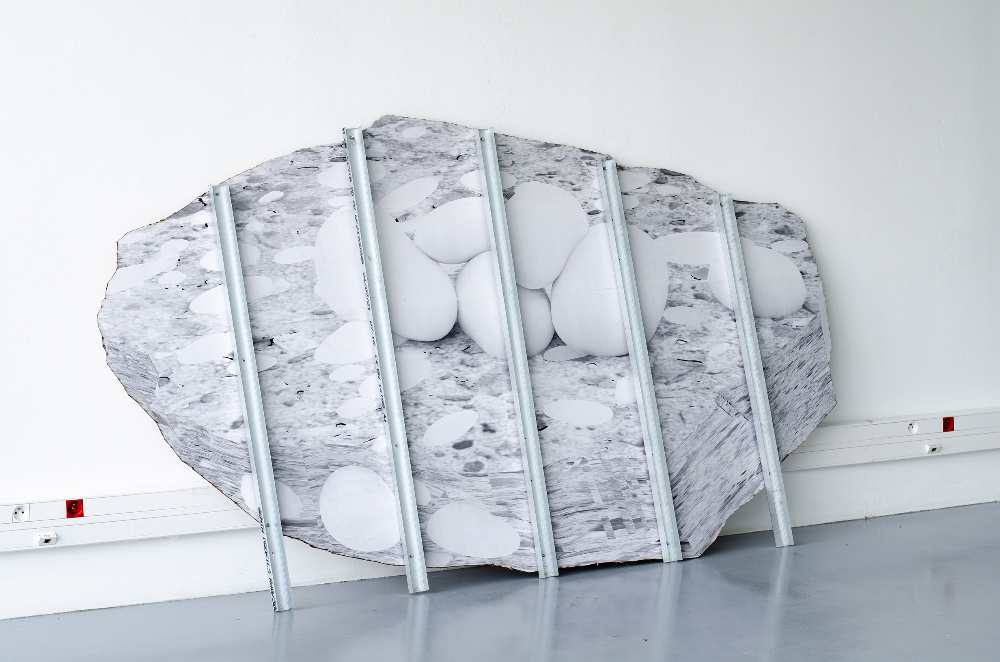

(fig.1)

Enfant, la serviette de plage de ma mère était recouverte d’un motif imprimé de galets. À la plage, quand elle la posait, je m’amusais à chercher des cailloux pour compléter le motif et créer un raccord entre les bords du motif et la plage.
Au fil des étés, à sécher sur le fil à linge les couleurs de la serviette ont passé. Et j’aime l’idée que même les couleurs du paysage passent avec le temps et le soleil. J’ai donc dessiné un bout de ciment dans lequel sont emprisonnés des cailloux, polis et décolorés.